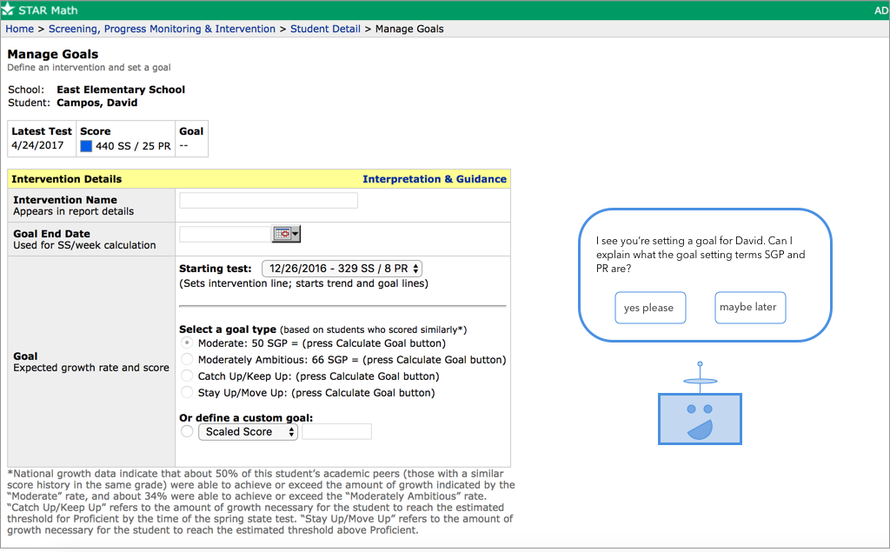
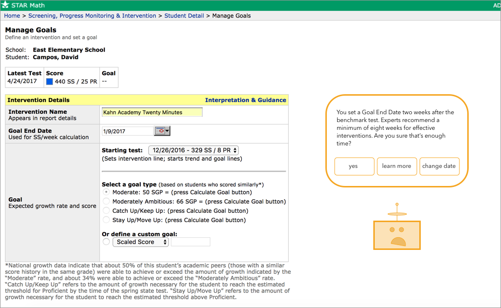

Based on our spring visioning session with Renaissance, we focused on three prominent insights from the spring research: making data from assessments actionable for teachers, helping teachers set goals that reflect expected rather than desired experience, and increasing trust in the metrics used by Renaissance.
The features were created to integrate with the existing Renaissance product, with an aim to augment the current user experience by providing timely support and training. Vittore’s solution pairs a worked example lesson on goal-setting with a pedagogical agent that provides real-time alerts of best practices while a user sets goals.
This product was developed through an agile methodology to support rapid iteration and user testing. Various iterations of the prototype focused on balancing learning from product use, effectiveness of the visualizations, and user experience. All design decisions for the prototype were based on evidence from the user interviews, supported by learning science and secondary research. Prototypes and findings from the user interviews were shared with the client to ensure that the user needs and the client expectations were aligned.
We tested our prototypes with teachers and administrators from K - 12 in different disciplines. We tested seven iterations of the prototype with a total of 23 users, including repeated testing rounds with over half of these users.
To incorporate findings from each user interview systematically into the prototype, we relied on categorizing insights from the interviews by the personas that we established in the research phase of the design (Mr. Wisdom, Miss Rainey, Mrs. Mitchell, and Ms. Horan).
The most salient differences between these personas related to both sentiment and understanding about the data. Like the persona Miss Rainey, we found that some users tended to be skeptical about the use of data to make their decisions, instead preferring to rely on their experience and observations to inform their decisions. Other teachers, like Mr. Wisdom, Mrs. Mitchell, and Ms. Horan, were enthusiastic about the role of data in their classroom, positing that data can help them make better decisions. Among these personas, the biggest differentiating factor was understanding of data. Many teachers expressed comfort with the systems in place at their schools and the metrics they often used, but were less comfortable with new systems. Representative of the Ms. Horan and Mrs. Mitchell personas. On the other hand, other users saw how different metrics transfer, giving them more data expertise (Mr. Wisdom).
To create prototypes for users to test, we used Sketch, a vector-based design application, and InVision, a rapid prototyping tool, to build all phases of the prototypes. The prototype screens have clickable hotspots, so users are able to simulate all the interactions that are intended in the application.
Early Prototyping (Rounds 1-2)
In the earliest rounds of prototyping, we wanted to investigate how a pedagogical agent fits into user practices of goal-setting. In particular, we were interested in determining what types of assistance would best help users set goals according to best practices. In our spring research, we had determined that novice users might have a difficult time parsing all the metrics that Star uses, while experienced users might have standard practices in place that do not fit best practices.
In these prototyping rounds, we were investigating what content and delivery mode would fit needs of both novice and experienced users, provide training about best practices without frustrating users who may justifiably deviate from best practices, and make users aware of tradeoffs they made in their decisions.


Middle Prototyping (Rounds 3-5)
Once we understood the types of alerts that help users as they set goals, we divided the pedagogical agent into two products: a worked example that addresses how to use the metrics in the goal-setting wizard to compare and decide upon goals, and a pedagogical agent that guides users through interactions in the goal-setting process. This agent provides alerts when the user decisions deviate from best practices, prompts the users to consider additional information, and visualizes the different goals that the user can use the compare.
In these middle iterations, we investigated the learning demonstrated by the users as they completed the worked example and used the agent to guide their decisions. Users were presented with different use cases to ensure that they could justify their decisions based on the visualizations, that they could apply lessons taught in the worked example, and that they more closely matched best practices.
Late Prototyping (Rounds 6-7)
As the content of our prototype was finalized, we investigated the user experience of interacting with the pedagogical agent. With the aim of providing a product that would be useful to teachers with various levels of comfort with data, different desired levels of support, and different prior knowledge, we tested several customization options. The visual elements of the agent were refined at this stage, and the prototype was made fully functional by creating a Google Chrome plugin.
User interviews focused on user experience, with a focus on user preferences, functionality, and creating a refined final product. The learning and user experience were validated through a final testing session with a school that are Renaissance product users.
Insights from the user interviews were generated through affinity diagramming and model-building, and fit into various phases of the MTSS intervention cycle.
Based on these insights, the team generated product concepts that would help address teacher needs. These product concepts were refined in a visioning session with Renaissance, and combined to focus on several key insights. Based on the visioning session, the following insights were addressed in the final product:
Goals reflect desired - not expected - performance.
“The goal we set if because that’s where we truly want them, we want them to be at the 60th percentile.” - Middle School Administrator
Goals for students often come from a performance-driven, top-down approach as a response to predictions on state standards. Because schools are expected to have a certain percentage of their students pass state standardized assessments, student goals are set to achieve these outcomes. However, these goals are not likely to be attainable for students in Tier 2 or 3 support. Intervention teachers, aware of this limitation, are often forced to track a student’s “realistic” goal in addition to the numeric goal that is set in the system. Because the goals are not realistic from the start, the schools do not have a good measurement to determine whether their interventions are as useful as they expect.
Teachers want growth, but they don’t use a reference metric against which to compare student test scores.
“I tell the students ‘any improvement and you’re not failing.’” - Elementary school ELA teacher
Due to the difficulty of achieving the desired goal of “closing the gap” for students in Tier 2 or 3 support, educators, particularly intervention specialists, are most interested in their students demonstrating growth through the intervention process. Most teachers considered any growth an indication of an effective intervention without comparing that growth to what is expected of other students of equivalent performance levels. Because of this, the growth might demonstrate that a student is learning, but there are no indications about whether that learning is happening at an expected rate. This has the potential to sustain and even increase performance gaps between students. Even if a student in high support environment is growing, this growth might be too slow to catch them up to their classmates.
Limitations to using Student Growth Percentile (SGP) include distrust in the validity of the metric, difficulty in understanding the measurement logic, and perceived mismatch between SGP, desired goals, and realistic goals.
“Average growth for a student is between 35 SGP and 65 SGP. That’s nuts, that’s just too big.” - Middle School Administrator
Teachers question the validity of the SGP measurement because it compares student performance between only the current test and the previous test. Teachers feel that a particularly strong or poor testing day could significantly impact the norm-referenced group against which the student is compared.
More pressingly, many teachers do not understand what SGP represents. Although they know it is intended to measure growth, few users understand how to interpret its calculated value for setting an attainable goal.
Finally, setting goals through SGP does not allow the possibility of meeting the desired goals. If a student is very low performing (e.g. 2nd percentile), the SGP required to have that student reach the state benchmark is much too high to be reasonable for that student. SGP may paint a bleak picture - that even if a student is growing, they are not likely to advance.